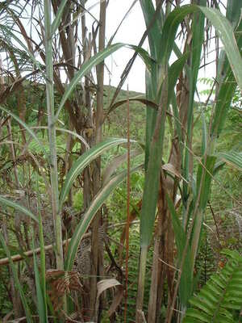
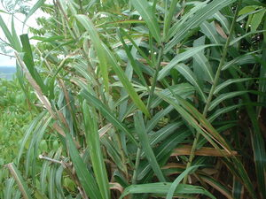
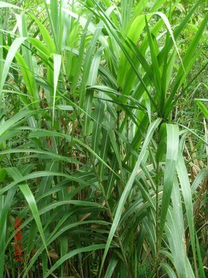

luwey   
/luɔy/
n.
“cane”
n.
Saccharum_spontaneum
a wild cane
Ka seini iyan sika se eghimuwen ne tunud due malalab wey maangkg se pused.
Wrd.Gloss: wild_cane
Cult. Its white feathery flower is called (WBM) burus. When dried, it can tied into a bundle and used as a flaming torch known as a gansè.
Eng. cane variety
OCM: Flora (137)
Online dict status: -
Usage level: B
vi.
for someone's hair (egluluwey, migluluwey/inluluwey, agent, eg><ø-rdpCV-) to be wavy (like the form of the luwey flower)
Ka seini iyan sika se bulbul ne egkeiling te tibelus te luwey ka batek.
Ka anak ni kuya Huwan ne malitan su egluuwey ka bulbul.
The daughter of kuya Huwan is wavy hair.
Egluluwey ka bulbul ni Duyin.
Duwayin's hair is wavy.
Eng. wavy hair; hair, wavy
DDP: Hair (2.1.5)
Online dict status: -
Usage level: M
Updated by: RJH,JLM,RJH,QDL,NJK,QDL,RAA
Last updated: 27/Jun/2018
This page last updated: 03-Jan-2020
Copyright © 2009-2014, Matigsalug Language Christian Association, Inc